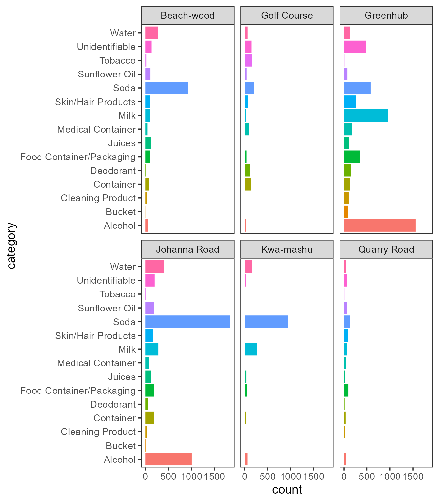

Examples
examples.RmdPlot
Descriptive text.
litterboom_counts |>
group_by(category, location) |>
summarise(count = sum(count)) |>
ggplot(aes(x = category,
y = count,
fill = category)) +
geom_col() +
facet_wrap(~location) +
coord_flip() +
theme_bw(base_size = 14) +
theme(legend.position = "none",
panel.grid = element_blank()) 
Prepare a map
leaflet(locations) |>
setView(lng = locations$longitude[[4]],
lat = locations$latitude[[4]],
zoom = 13) |>
addTiles() |>
addCircleMarkers(
lng = ~longitude,
lat = ~latitude,
label = ~location,
radius = 10,
stroke = FALSE,
fillOpacity = 1,
labelOptions = labelOptions(noHide = T,
textsize = "10px",
direction = "left",
offset = c(0, 0),
style = list(
"box-shadow" = "3px 3px rgba(0,0,0,0.25)",
"border-color" = "rgba(0,0,0,0.5)",
"font-style" = "italic"
)))